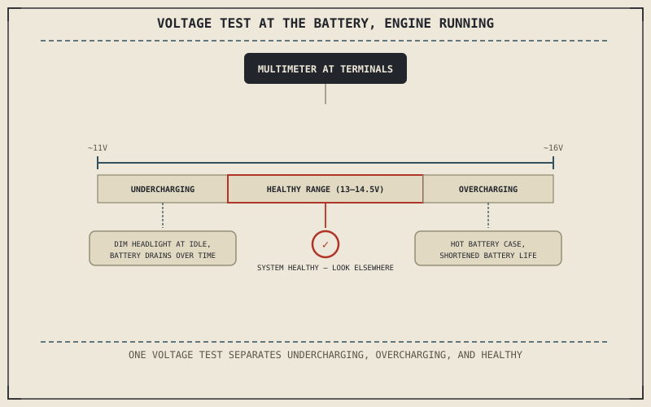

Chapter 11.3's crank-or-not test was a snapshot, answered the instant the starter is pressed. A charging fault is the opposite kind of problem: it develops gradually while the engine runs, and Chapter 10.7 already warned that a motorcycle can start perfectly reliably for weeks while its charging system quietly fails to keep pace with demand. This chapter is about catching that kind of fault before it becomes tomorrow morning's no-crank condition.
Chapter 11.3 closed by pointing to exactly this: electrical behavior over time, rather than at a single moment. This chapter covers it.
The Undercharging Symptom: Losing a Slow Race
Chapter 10.7 described a charging system producing too little voltage as a fault that masks itself, since the battery's reserve capacity absorbs the shortfall for a while before finally running out, often on a longer ride, in cold weather, or with an added accessory drawing current the marginal system was never quite covering. The telling pattern is a battery that seems to need jump-starting or replacing more often than it should, or headlights Chapter 9.12 identified as the rider's main source of night visibility that noticeably dim at idle and brighten again as engine speed rises — a sign the system is struggling to keep up with demand at low RPM specifically.
The Overcharging Symptom: Cooking What It's Meant to Protect
A voltage regulator that fails in the opposite direction sends too much voltage into the battery Chapter 10.7 described as a chemical storage device, not a device built to absorb unlimited current. Overcharging can boil the battery's electrolyte, warp its internal plates, and shorten its usable life dramatically even though the symptom a rider actually notices — a battery that keeps needing replacement — looks identical to simple old age or the undercharging case above. A warm or hot battery case after a normal ride, or a battery that seems to fail well before its expected lifespan, points toward this direction instead.
Undercharging and overcharging can each produce a battery that "keeps needing replacement" — one starving it of the current it needs, the other cooking it with too much — and a single voltage test at the battery, engine running, is what actually tells them apart.

A diagram showing a multimeter reading taken at the battery with the engine running, with the measured voltage branching into three zones: undercharging below the healthy range, a healthy charging range, and overcharging above it.
One Test That Separates Both Symptoms
Following Chapter 11.1's method, a single test can distinguish undercharging from overcharging from a genuinely healthy system: measuring voltage directly at the battery terminals with the engine running, first at idle and then at a moderate RPM. A reading that stays low at both speeds points toward undercharging; a reading well above that healthy range at either speed points toward overcharging; a reading that climbs modestly from idle to moderate RPM and settles within the expected range confirms the charging system itself isn't the cause, sending the search back to Chapter 10.7's terminal corrosion or the battery's own condition instead.
A Common Misconception, Cleared Up Early
It's a common assumption that a charging fault only reveals itself as a dead battery, discovered inconveniently on the morning a rider actually needs the bike. Dimming headlights at idle, a battery that runs hot to the touch, or a battery that fails well before its expected lifespan are all earlier warning signs of exactly the same underlying fault, and the voltage test this chapter described can catch a failing charging system well before it produces Chapter 11.3's no-crank condition at all.
Where This Leads
The engine and its electrical system are now both covered. Chapter 11.5 turns to the drivetrain that carries the engine's power to the rear wheel, starting with clutch and transmission problems.
Key Concepts to Remember
- Undercharging starves the battery of current it needs; overcharging feeds it more than it can safely absorb — both can produce a battery that "keeps needing replacement."
- A voltage reading taken at the battery with the engine running, at idle and at moderate RPM, distinguishes undercharging, overcharging, and a genuinely healthy system in a single test.
- Dimming headlights at idle and a hot battery case are earlier warning signs of a charging fault than a dead battery, and can be caught before Chapter 11.3's no-crank condition happens at all.
Cross-References
| ← Ch. 10.7 | Established the charging system replenishing the battery and warned that undercharging can mask itself; this chapter builds a targeted test around exactly that warning. |
| ← Ch. 9.12 | Established the headlight as a rider's main source of night visibility; this chapter treats its dimming at idle as an early symptom of undercharging. |
| ← Ch. 11.3 | Covered a no-crank condition as an electrical snapshot; this chapter shows a charging fault as the gradual process that can produce that same snapshot later. |
| → Ch. 11.5 | Covers diagnosing clutch and transmission problems, turning from the electrical system to the drivetrain. |